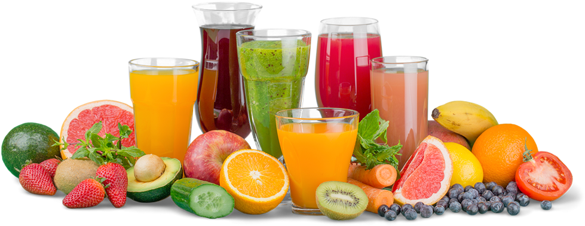

* NINJA FRUITS *
A Guideline To Fruit and Veggie Nutrition:

Fruit Nutrition Facts
1st
We all like to feel our best, right? It’s important for us to eat foods that are rich in nutrients and fruit and vegetables are wonderful sources for specific nutrients your body needs to help it function at its best. Fruits & Veggies–More Matters has pulled together a list of these nutrients and a list of the fruits and/or veggies that carry the label of “high” or “good” sources for them.
1st
Regular fruit consumption as part of a healthy diet may also help: control blood pressure and cholesterol. improve gut and digestive health. protect against certain types of
1st
Most fruit is naturally low in fat, sodium, and calories.fruits are source of many essential nutrients such as potassium, vitamins A and C, folate, and dietary fiber. The United States Department of Agriculture (USDA) recommends adults consume a minimum of 2–4 servings of fruit per day, mostly whole fruit. Fruits are nature’s marvelous gift to humankind; indeed, they are life-enhancing medicines packed with vitamins, minerals, antioxidants, and many phytonutrients (Plant-derived micronutrients). They are an absolute feast to our sight, not just because of their color and flavor but of their unique nutrient profile that helps the human body be fit, rejuvenate, and free of diseases!
LIST OF SOME NUTRIENTS FRUITS CARRY
Calcium: Essential for healthy bones and teeth. It is also needed for the normal functioning of muscles, nerves, and some glands.
Fiber: Diets rich in fiber have been shown to have a number of benefits including decreased risk of coronary disease.
Folate: Diets with adequate folate may reduce a woman’s risk of having a child with a brain or spinal cord defect.
Iron: Needed for healthy blood and normal functioning of all cells.
Magnesium: Necessary for healthy bones and involved with more than 300 enzymes in your body. Inadequate levels may result in muscle cramps and high blood pressure.
Potassium: Diets rich in potassium may help maintain a healthy blood pressure.
Sodium: Needed for normal cell function, although most diets contain too much sodium, which is associated with high blood pressure.
Vitamin A: Keeps your eyes and skin healthy and protects against infections.
Vitamin C: Helps heal cuts and wounds and keeps teeth and gums healthy.
Health Benefits Of Eating Fruit
A diet rich in vegetables and fruits can lower blood pressure, reduce the risk of heart disease and stroke, prevent some types of cancer.
Fruits can also help lower risk of eye and digestive problems. Eating fruits every day can have a positive effect upon blood sugar, which can help keep appetite in check.Fruits and vegetables are a great source of vitamins and minerals
You get to enjoy a variety of flavors and textures
Lots and lots of fiber.
They're low-calorie and low-fat
Protect against cancer and other diseases.
Fruits and vegetables help you maintain good health.
Some Examples Of Different Fruits And Types
| apples |
oranges |
mangoes |
grapes |
| gala |
blood |
ataulfo |
concord |
| fuji |
navel |
alphonso |
moon drop |
| granny smith |
jaffa |
irwin |
crimson |
| honey crisp |
valencia |
keitt |
red globe |